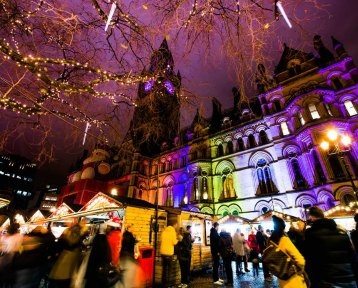

Explore Manchester
Jodrell Bank
Our Jodrell Bank Observatory (a UNESCO World Heritage Site) is home to the giant Lovell Telescope.
The John Rylands Research Institute and Library
Our Grade I-listed, neo-Gothic library houses the University's Special Collections.

The City Manchester
Manchester Museum
With dinosaur skeletons and mummies from Ancient Egypt, Manchester Museum's collection of more than 4 million objects spans millennia.
The Whitworth
Our art gallery is home to more than 55,000 works of art, ranging from textiles to some of the most famous British watercolours.